How the CRM decides each month's Top Performer and Lowest Performer, what every rating on the Review page is worth, what the optional controls on the Top Performer tab do, and how the date filters change what you see.
The short version
Every person is scored against a list of up to twelve criteria for one calendar month. Four criteria are read automatically from that month's Review, Attendance and Leaves sheets; the rest are confirmed by a manager. The score is the share of criteria met. The highest scorer at 80% or above is the Top Performer and earns the $200 incentive; the lowest scorer, when someone clearly trails the rest, is the Lowest Performer. Everything — reviews, attendance, leaves, confirmations, switches — belongs to the month being judged.
Prepared forHuman Resources
VersionSeptember 2026 · month-constrained logic
Applies toReview page · Top Performer tab · staff badges
A review is about the month that has just finished. The sheet you fill in during September judges August, and the Top Performer of August is decided from August's data alone.
1Month endsAttendance and the Leaves sheet for the month are complete.
2Reviews are writtenPerformance and Behaviour rows are keyed in on the Review page, with the month picker set to the month reviewed.
3Criteria are confirmedOn the Top Performer tab a manager switches on the optional criteria and ticks the ones only a manager can vouch for.
4Names are announcedThe two headline cards name the Top and Lowest performer; the badges beside their names follow across the CRM.
What feeds the decision
Source
Where it is entered
What it decides
Behaviour review
Review page → Behavior tab, month picker on the month judged
Criterion 1 · Exemplary Behavior
Performance review
Review page → Performance tab (rating and percentage)
Criterion 9 · Goal Achievement
Attendance
Attendance page → Day Sheet (the check-in bot's record, corrected by hand), every day of the month, judged against the expected login / logout set on the Staff page
Criterion 2 · Punctuality and Criterion 4 · Timely Login
Leaves sheet
Staff Management → Leaves, rows dated within the month; the Half Day and Late Login columns
Counts against criteria 2 and 4
Manager confirmations
Review page → Top Performer tab, the chips beside each name
Criteria 3, 5, 6, 7 and any of 8, 10, 11, 12 that are switched on
Month settings
Top Performer tab — the optional-criteria switches and the Goal Achievement target
Which criteria are in play, and the percentage bar for criterion 9
Everything is month-constrained. Each of the six sources above is stored against a month. Confirmations ticked for August stay with August; switching a criterion on for August does not switch it on for September. Opening a different month shows that month's own answer, and nothing you see is ever carried over from the month before.
2 Reviewing on the Review page
The Review page has four tabs. Performance and Behaviour hold one row per person per month; Department holds one score per department per month; Top Performer reads the first two and decides the month. Each rating you choose has a fixed value in the Top Performer calculation, set out below.
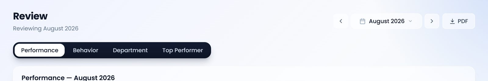
The header: the month being reviewed, the month picker, a PDF export of whichever tab is open, and the four tabs.
2.1 Performance tab — ratings and what they are worth
One row per person, grouped under the department they sit in on the Staff page. Each row has a rating, a percentage and free-text notes. The rating and the percentage together decide criterion 9, Goal Achievement, when that criterion is switched on (it is on by default).
Rating chosen
Goal Achievement (criterion 9)
How it is valued
Excellent
Met
Met on the rating alone. The percentage does not matter for the criterion (it still counts as a tie-break — see 3.3).
Good
Met
Met on the rating alone, exactly as Excellent is.
Average
Depends on %
Met only if the percentage reaches the month's Goal Achievement target (80% unless changed). 81% with Average is met; 74% with Average is not.
Below Average
Depends on %
Same rule as Average: the percentage must reach the target. In practice a Below Average row rarely carries a percentage that high.
Poor
Depends on %
Same rule as Average. A Poor rating with a percentage under the target is not met.
No row, or blank rating and blank %
? Unknown
Shown as a grey ? on the Top Performer tab. An unknown criterion is counted as not met, so a missing review costs the person a criterion.
What the percentage does. Two things. First, it can rescue criterion 9 for an Average / Below Average / Poor rating when it reaches the target. Second, it is the first tie-break in the ranking: two people who meet the same number of criteria are ordered by performance percentage, higher first. Enter it for everyone, not only for the people with a middling rating.
Notes are for the person's file and the PDF export; they play no part in the calculation. Elsewhere in the CRM (the Dashboard's Staff view) Excellent and Good are shown green, Average in navy, Below Average and Poor red — the same reading as the table above.
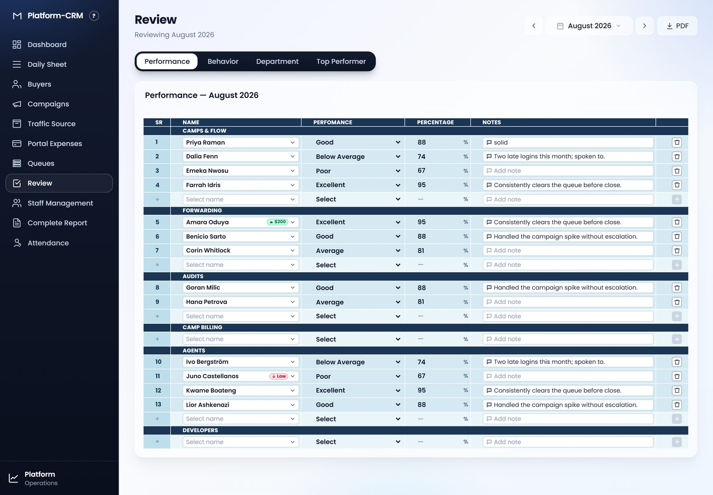
The Performance tab for August 2026. Rows sit under their department band; the + row under each band adds a person. The green $200 and red Low badges beside two names are August's own result, printed back onto the sheet that produced it.
2.2 Behaviour tab — ratings and what they are worth
One row per person with a single behaviour analysis rating. It decides criterion 1, Exemplary Behavior, which is always in play.
Rating chosen
Exemplary Behavior (criterion 1)
How it is valued
Consistent Performance
Met
Any rating other than Low Performer meets the criterion. The five positive wordings are equal for the calculation — they describe the person, they do not score differently. (On the Dashboard, Consistent Performance and Good Standing are shown green and the middle three in navy, but that is presentation only.)
Good Standing
Met
Meets Expectations
Met
On Track
Met
Satisfactory
Met
Low Performer
Not met
The one rating that fails criterion 1. Because criterion 1 always applies, a Low Performer cannot score 100% for the month.
No row, or blank rating
? Unknown
Grey ? on the Top Performer tab, counted as not met.
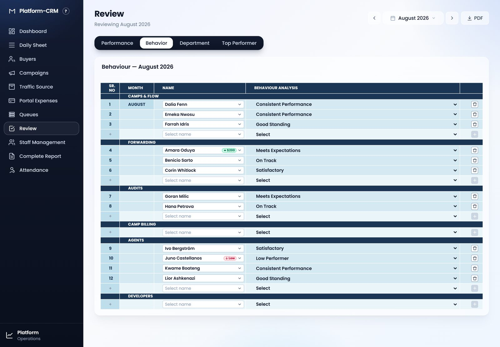
The Behavior tab for the same month. Same layout as Performance, without the percentage and notes columns.
2.3 Department tab
A rating and a percentage per department for the month. It is the department scorecard shown on the Dashboard's Staff view and exported to PDF; it does not feed the Top Performer calculation, which is about individuals.
The name cell
Names are picked from the Staff page roster, and that is how a review is linked to a person. A review written before the person was added to the roster is matched by the printed name, so spell the name as it appears on the Staff page. A row whose name matches nobody on the roster is kept on the sheet but is not scored for anyone.
3 How the Top Performer is chosen
Every person on the roster is judged against the criteria in play for the month. Four verdicts are read from the data; the rest are the manager's confirmations. The score is the share of criteria met, and the two headline cards read the ends of the ranking.
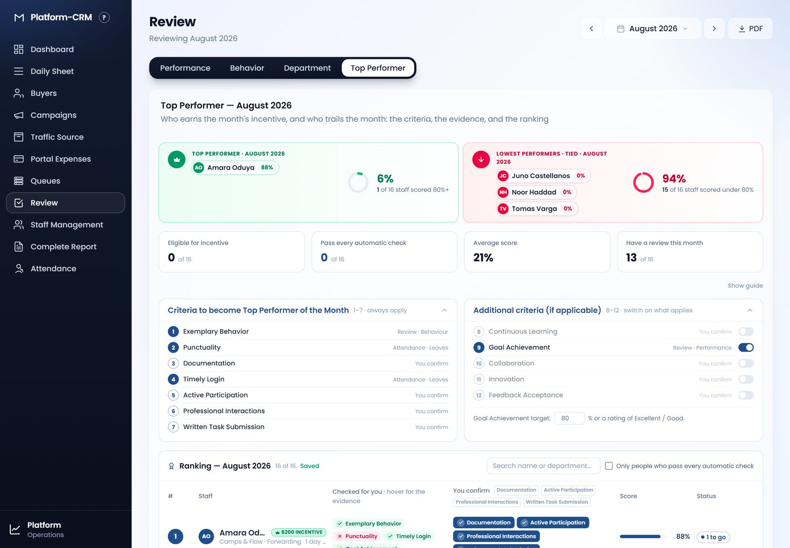
The Top Performer tab: the two headline cards, four summary tiles, the two criteria panels and, below them, the ranking.
3.1 The twelve criteria
Criteria 1–7 always apply. Criteria 8–12 are the "if applicable" ones: a manager switches on the ones that apply to the month (see section 4), and only those count. Goal Achievement (9) is on unless it is switched off.
#
Criterion
Checked by
Exact rule used
1
Exemplary Behavior Always demonstrate best practices in conduct.
CRM · Review › Behaviour
Met when the person's behaviour analysis for the month is anything but Low Performer. No row → unknown.
2
Punctuality Consistently arrive and complete work on time.
CRM · Attendance + Leaves
Met when no day of the month ended before the person's expected logout (a logout even one minute early counts) and the Leaves sheet has no Half Day row for them in the month. Needs at least one day with a login; with no logouts to judge and no Half Day rows, unknown.
3
Documentation Record and submit all work in PDF format.
Manager
Met when a manager has ticked it for the person for this month.
4
Timely Login Never delay in logging into work systems.
CRM · Attendance + Leaves
Met when no login in the month is after the person's expected login (no grace period) and the Leaves sheet has no Late Login row for them. Needs at least one day with a login; with no expected login set and no Late Login rows, unknown.
5
Active Participation Engage in team meetings and contribute ideas for growth.
Manager
Ticked for the person for this month.
6
Professional Interactions Maintain respectful relationships with seniors, management, and teammates.
Manager
Ticked for the person for this month.
7
Written Task Submission Submit all tasks in writing.
Manager
Ticked for the person for this month.
8
Continuous Learningoptional Actively seek opportunities for professional development.
Manager
Only counts when switched on for the month; then ticked per person.
9
Goal Achievementoptional · on by default Meet or exceed performance targets and goals.
CRM · Review › Performance
Met when the performance rating is Excellent or Good, or the percentage reaches the month's Goal Achievement target (80% unless changed). No row → unknown.
10
Collaborationoptional Work effectively with others to achieve team objectives.
Manager
Only counts when switched on; then ticked per person.
11
Innovationoptional Propose and implement new ideas that enhance productivity or efficiency.
Manager
Only counts when switched on; then ticked per person.
12
Feedback Acceptanceoptional Openly receive and act on feedback for improvement.
Manager
Only counts when switched on; then ticked per person.
Expected hours must be set. Criteria 2 and 4 are judged against the Expected Login and Expected Logout columns on the Staff page. A person with neither set can never be marked late or early — so both criteria show as unknown for them, which counts as not met. With the default eight criteria in play, the most such a person can score is 6 of 8 = 75%, under the 80% bar: they cannot be Top Performer until their hours are on the Staff page.
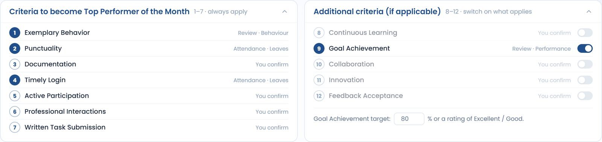
The criteria panels. Left: 1–7, always in play. Right: 8–12 with their switches, and the Goal Achievement target under them. Filled numbers are checked by the CRM; outlined numbers are the manager's to confirm.
3.2 How a score is worked out
Score = criteria met ÷ criteria in play, as a whole percentage
Criteria in play = the seven core criteria plus whichever of 8–12 are switched on for the month. With the default settings that is 8; with all five optional criteria on it is 12.
A criterion is met (green tick), not met (red cross) or unknown (grey ?). Unknown counts as not met — the CRM never gives credit for evidence it does not have.
A manager's criterion is met only when ticked. Nothing is assumed.
Example: with 8 criteria in play, a person who meets 7 scores 88% (7 ÷ 8 = 0.875, rounded). Meeting 3 of 8 scores 38%; 2 of 8 scores 25%.
One row of the ranking: rank, person (with department and days present), the four verdicts the CRM checked, the manager's chips, the score bar and the status. This person meets 7 of 8 — Punctuality failed on an early logout — so they are "1 to go".
3.3 Ranking order and tie-breaks
The list is ordered by these rules, each one applied only when the previous rule ties:
Criteria met — more first.
Performance percentage from the Performance tab — higher first. A person with no percentage sorts below anyone who has one.
Share of on-time logins in the month — higher first.
Minutes late summed over the month — fewer first.
The roster order on the Staff page, then the name.
People with the same number of criteria met share a rank number, the way a leaderboard reads: 1, 2, 3, 3, 3, 6… The tie-breaks decide the order they are printed in, not the number.
3.4 Who is named Top Performer
The rule
Take everyone scoring 80% or more — the Top Performers list.
The highest score on that list is the Top Performer of the Month, and earns the $200 incentive.
If several people share that highest score, all of them are named ("Top performers · tied").
If nobody reaches 80%, nobody is named: the card reads "No one at 80% yet".
Top Performer is not the same as Eligible
Eligible means every criterion in play is met — 100%. It is the incentive mark the client's list describes, and the row is tinted green with a crown.
Top Performer is whoever scores highest once over 80%. In a month where nobody is perfect, the Top Performer is still named (at 88%, say) even though nobody is Eligible. In a month where someone is Eligible, they are necessarily the Top Performer.
3.5 Who is named Lowest Performer
The Lowest Performer is the lowest score of the month — everyone tied at that score — but only when naming somebody says something. All three of these must hold:
At least two people were judged.
Somebody scored better — the lowest score is not also the highest. A month with no reviews and no attendance, where everyone scores 0%, therefore names nobody.
The lowest score is under 80%.
When the rule does not hold the red card reads "No one behind the rest". The Lowest Performer wears a red ↓ Low badge beside their name wherever that name is printed in the CRM for that month.
A missing review can make someone the Lowest Performer. Because unknown counts as not met, a person with no Behaviour row, no Performance row and no attendance scores 0% — and if others have data, they trail. Before announcing the month, make sure every active person has both review rows (the "Have a review this month" tile counts them).
3.6 The headline cards and tiles
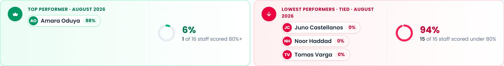
Green card: the Top Performer(s) with their score, and the share of the roster on the Top Performers list (80%+). Red card: the Lowest Performer(s) with their score, and the share of the roster under 80%.
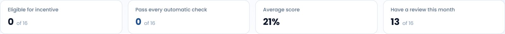
The tiles count the roster: how many are Eligible (100%), how many pass all four automatic checks, the average score, and how many have at least one review row this month.
4 Optional fields and controls on the Top Performer tab
Everything below is saved per month and, apart from the two display preferences, shared with every manager who opens that month.
Additional criteria switches (8–12)
The five toggles in the Additional criteria (if applicable) panel put a criterion in or out of play for the month. A criterion that is off is greyed out and does not appear in the ranking, is not counted in the score, and cannot be ticked. Switching one on adds it to the "criteria in play" total for everyone — so every score drops until the criterion is confirmed, which is why it is best to set the switches before ticking.
Goal Achievement (9) is on by default and is read from the Performance tab.
8, 10, 11 and 12 are off by default and, when on, are confirmed by chip like criteria 3, 5, 6 and 7.
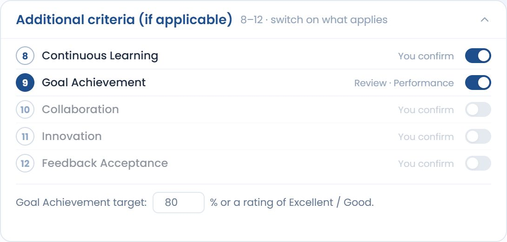
Continuous Learning switched on for the month. The criterion is now in play: 9 criteria instead of 8.
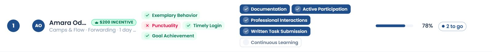
The same person as before, now judged on 9 criteria. Their 7 met is now 78% instead of 88%, and a fifth chip — Continuous Learning — waits to be confirmed.
Goal Achievement target
The number field under the switches (default 80, range 0–100). It is the percentage a Performance row must reach for criterion 9 to be met when the rating alone (Excellent / Good) does not meet it. Lowering it to 75 lets an Average · 76% row count; raising it to 90 does not affect Excellent or Good rows at all. It is saved for the month.
Confirmation chips (per person)
In the You confirm column each manager-checked criterion is a chip. Tap it to credit that criterion to that person for the month; tap again to take it back. Filled navy means credited. Each tap is saved a moment later — the Saved / Saving… / Not saved word beside the ranking title says where it stands — and is visible to every other manager who opens the month.
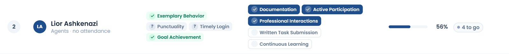
Three chips credited on one row. The score and the "to go" status update at once.
Credit to everyone shown (header chips)
The small chips in the column header credit one criterion to everyone currently shown in the list in a single tap — useful when, say, every person submitted their PDFs. If everyone shown already has it, the same tap takes it back from all of them. "Shown" respects the search box and the filter below, so you can narrow the list first.
The column header. Each chip beside "You confirm" credits (or removes) that criterion for everyone in the list.
Re-rank
Scores change with every tick, and a live list would re-sort under your finger — the person you just ticked would jump away. So the first tick holds the order on screen. Rank numbers and scores keep updating in place; when the order on screen no longer matches the true ranking a Re-rank button appears beside the title. Press it when you have finished ticking to see the real order. Changing the month, or reloading, also restores the true order.
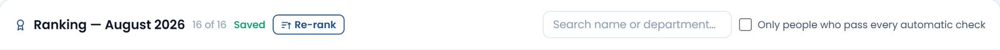
The Re-rank button appears once ticks have changed the order underneath the held list.
Search, and "Only people who pass every automatic check"
The search box narrows the list by name or department. The checkbox keeps only people whose four CRM-checked criteria (1, 2, 4 and, if on, 9) are all met — the shortlist from which the Eligible people will come. Neither changes any score; they only change who is listed (and who the header chips apply to).
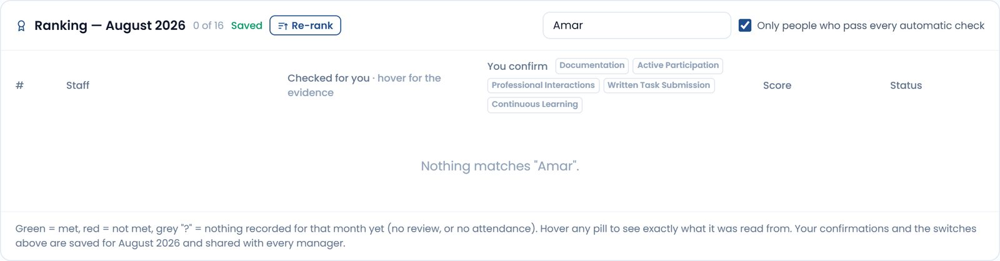
The filter applied in a month where nobody passes all the automatic checks — the list is empty and says so.
Display preferences (this browser only)
Hide guide / Show guide — the three-step "How it works" panel can be hidden; the choice is remembered in this browser only.
Folding the criteria panels — each panel's header folds its list away; also remembered per browser.
PDF
The PDF button in the page header exports whichever tab is open. On the Top Performer tab it prints the ranking exactly as shown — the criteria in play, every verdict, the scores and the incentive mark — as the month's record.
5 How date filters affect what you see
A date filter never changes the data or the result. It chooses which month's answer a page displays. The green $200 and red Low badges beside a name always belong to one specific month, and each page decides that month from its own filter.
Page
Its date filter
Which month the Top Performer, Lowest Performer and badges speak for
Review (all four tabs)
Month picker in the header. Opens on the month before the current one.
The month picked. Change the month and the Top Performer tab re-reads that month's reviews, attendance, leaves, switches and ticks; the badges in the name cells of Performance and Behaviour follow.
Staff Management — Staff tab
None of its own (a search box). The month picker on the Leaves and Salaries tabs sets the page's month.
The Leaves / Salaries month — the month before now unless changed. The "Top Performer" preview panel and the badges on the roster show that month.
Staff Management — Leaves, Salaries
Month picker. Opens on the month before now.
The month picked.
Attendance — Day Sheet
A single date. Opens on today.
The month that date falls in. A day in August wears August's badges; a day in September wears September's.
Attendance — Staff Summary
Month picker. Opens on the current month.
The month picked.
Attendance — Staff Reports
From / To dates, with weekly and monthly presets.
The month the range starts in. A range that straddles two months uses the first.
Dashboard — Staff view
Month picker. Opens on the current month.
The review month shown on the cards, which is one month behind the picker (attendance for September sits beside August's reviews). Badges follow the reviews.
Queues, Users, the sidebar
No date filter.
The month a review is written about: the month before the current one.
The roster is judged as of the month
Someone marked Inactive on the Staff page today is still ranked in a past month if that month holds any evidence for them — an attendance day, a Leaves row or a review. They were on the team that month, so they compete for that month. Active and On-leave staff are always ranked. A person with no evidence at all in a month is still ranked if they are Active — at 0% if nothing was recorded.
The current month is provisional
The picker allows the month in progress. The result then rests on partial attendance and, usually, no reviews yet — so most people show grey ? verdicts and nobody reaches 80%. Treat it as a preview; the month's real answer is read once its reviews are in.
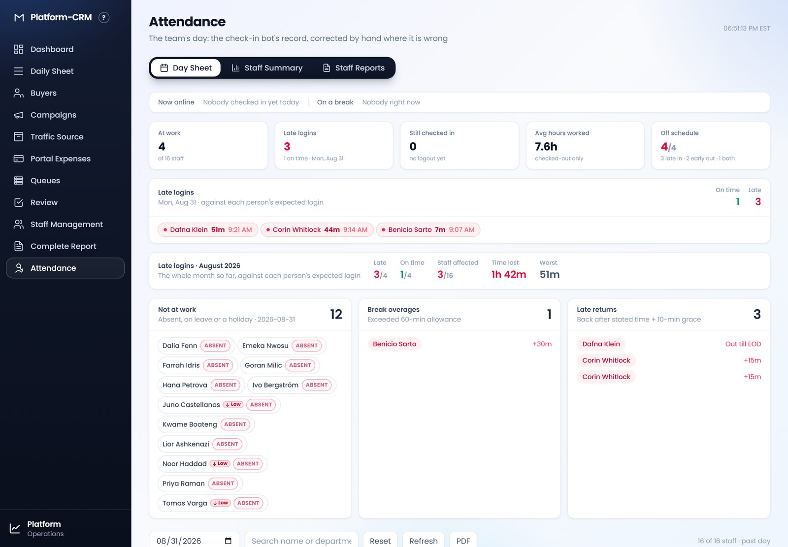
The Day Sheet on 31 August 2026: the Low badges are August's Lowest Performers.
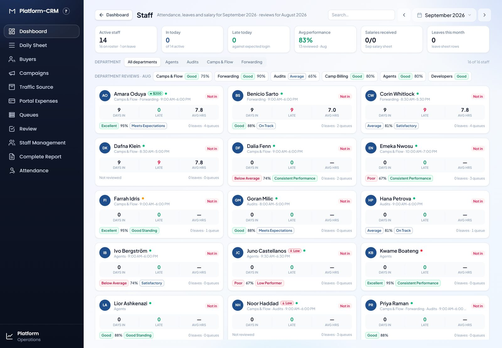
The Dashboard's Staff view on September 2026 — reviews and badges are for August, as the subtitle says.
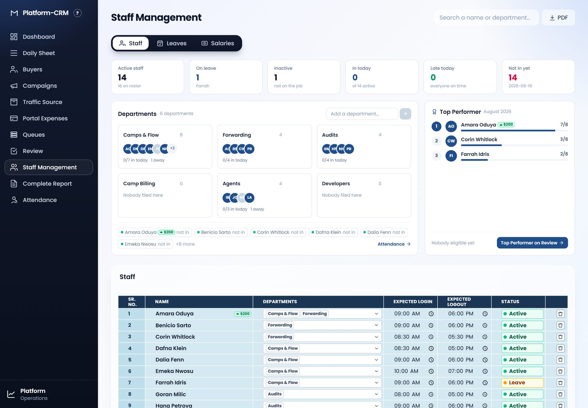
Staff Management: the Top Performer preview panel and the roster badges follow the page's month (August 2026 here).
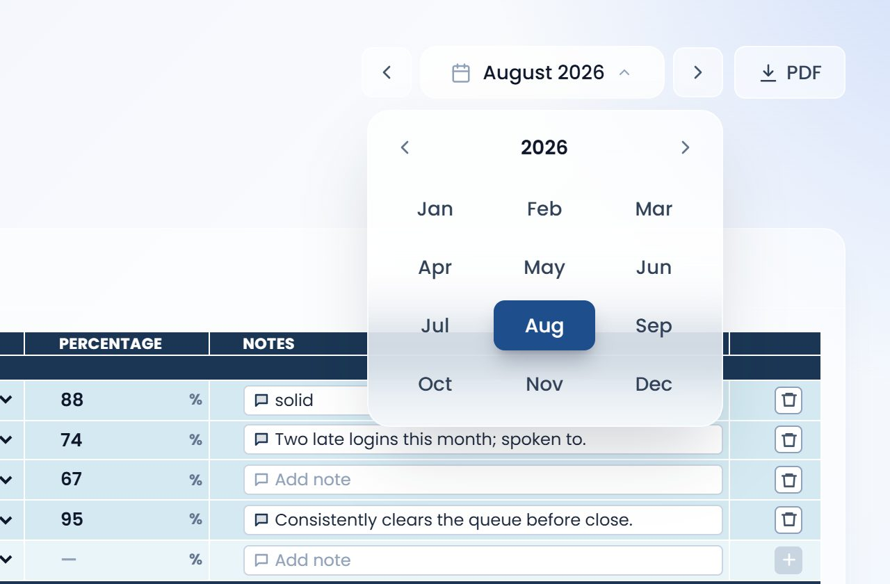
The month picker used on Review, Staff Management, the Attendance Staff Summary and the Dashboard's Staff view. Step with the chevrons, or open the grid to jump to any month of any year.
6 Worked example — August 2026
The month in the screenshots, with the default settings: 8 criteria in play (1–7 plus Goal Achievement), target 80%.
Top Performer: Amara Oduya, 88%
#
Criterion
Verdict
Evidence
1
Exemplary Behavior
Met
Behaviour tab: Meets Expectations.
2
Punctuality
Not met
Logged out 17:30 on 31 Aug against an expected 18:00 — one early logout of one judged.
3
Documentation
Met
Confirmed by the manager.
4
Timely Login
Met
Logged in 09:00 against an expected 09:00; no Late Login row on Leaves.
5
Active Participation
Met
Confirmed.
6
Professional Interactions
Met
Confirmed.
7
Written Task Submission
Met
Confirmed.
9
Goal Achievement
Met
Performance tab: Excellent · 95% — met on the rating.
Score
7 of 8 = 88% — over the 80% bar and the highest in the month, so Top Performer and the $200 incentive. Not Eligible (100%) because of the early logout: "1 to go".
Lowest Performers: three people tied at 0%
Juno Castellanos, Noor Haddad and Tomas Varga each score 0 of 8. Juno's Behaviour row is Low Performer (criterion 1 not met) and their Performance row is Poor · 67% (under the 80% target, criterion 9 not met); the two attendance criteria are unknown because they had no recorded day in the month, and the four manager criteria are unticked. Noor and Tomas have no review rows at all and no attendance, so every criterion is unknown or unticked. The rule for naming a Lowest Performer holds — more than one person, somebody scored better, 0% is under 80% — so all three tied at the bottom are named.
Everyone in between
Corin Whitlock meets 3 of 8 (38%): Behaviour, Punctuality and Goal Achievement, with a late login (09:14 against an expected 08:30) failing Timely Login, and no chips yet. Six people sit at 25% and share rank 3 — Behaviour and Goal Achievement met from their reviews, nothing confirmed, and attendance either unknown (no recorded day in August) or failed. The tie-breaks order them: Farrah Idris and Kwame Boateng (95%) print above Goran Milic, Lior Ashkenazi and Benicio Sarto (88%), and Benicio prints last of those three because his one login was 7 minutes late. Five people sit at 13% (rank 9): one criterion met each, whether a Behaviour rating with a Performance row under the target, or — Dafna Klein — a full day's attendance with no review rows at all.
Kwame Boateng is marked Inactive on the Staff page today, but August holds a Leaves row and both review rows for him, so he is ranked for August. Juno Castellanos has a Late Login row on the Leaves sheet, but with no attendance day recorded in the month the attendance criteria stay unknown rather than failed — a Leaves mark only counts against a month that has attendance to judge.
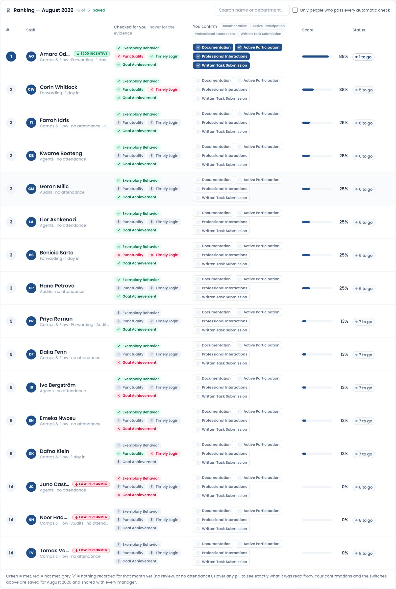
The August 2026 ranking as it stands, before any further confirmations.
7 Reviewer's checklist
Work through this once a month, in this order, before announcing the names.
Before you open the Top Performer tab
Staff page: every active person has an Expected Login and Expected Logout. Without them criteria 2 and 4 are unknown and the person cannot pass 75%.
Attendance: the month's days are complete and corrected — a wrong logout time is an early-out against the person.
Leaves sheet: Half Day and Late Login rows are entered for the month (these count against criteria 2 and 4 even when the attendance record looks clean).
Review page, month picker on the month judged: a Performance row (rating and percentage) and a Behaviour row for every active person. Names picked from the roster.
On the Top Performer tab
Set the additional criteria switches and the Goal Achievement target for the month first, before ticking.
Confirm the manager criteria per person, only once seen. Use the header chips for anything that applies to everybody.
Press Re-rank. Check the two headline cards.
Confirm the status word reads Saved.
Export the PDF as the month's record.
Fairness rules of thumb. The same rating means the same thing for everyone — Good and Excellent both meet Goal Achievement; every Behaviour wording but Low Performer meets Exemplary Behavior. A criterion nobody ticks is a criterion nobody meets, so if a criterion is switched on it must be confirmed for everyone who deserves it, not only the front-runners. And the month is the unit: what happened in July is never read into August.
8 Quick reference — badges and pills
Mark
Meaning
♛ $200 incentive / $200
Top Performer of the month the page is showing. Hover for the month and the incentive.
↓ Low performer / Low
Lowest Performer of the month the page is showing.
✓ Eligible
Every criterion in play met — 100%. Row tinted green; the rank badge becomes a crown.
● 2 to go / ● 5 to go
How many criteria the person still lacks. Navy when two or fewer.
✓ Criterion
CRM-checked criterion met. Hover for the evidence it was read from.
✕ Criterion
CRM-checked criterion not met. Hover for what failed it ("2 late logins of 20", "1 Half Day on Leaves"…).
? Criterion
Nothing recorded to judge — no review row, no attendance, or no expected hours. Counts as not met.
✓ Criterion (filled chip)
Manager-confirmed criterion, credited for this person this month.
Criterion (outlined chip)
Manager criterion not yet confirmed for this person.
Saved · Saving… · Not saved
Whether the month's ticks and switches are on the server. "Not saved — check your connection" means the last change is only in this browser.
Re-rank
The order on screen is held while you tick; press to restore the true order.
Number
Where it comes from
80%
The bar for the Top Performers list, and the threshold under which a Lowest Performer can be named. Fixed.
$200
The month's incentive, printed on the green badge. Fixed.
Goal Achievement target (80 by default)
Editable per month on the Top Performer tab. The percentage that meets criterion 9 for a rating below Good.
8 criteria (by default)
1–7 always, plus Goal Achievement. Each optional criterion switched on adds one to the total everyone is scored out of.